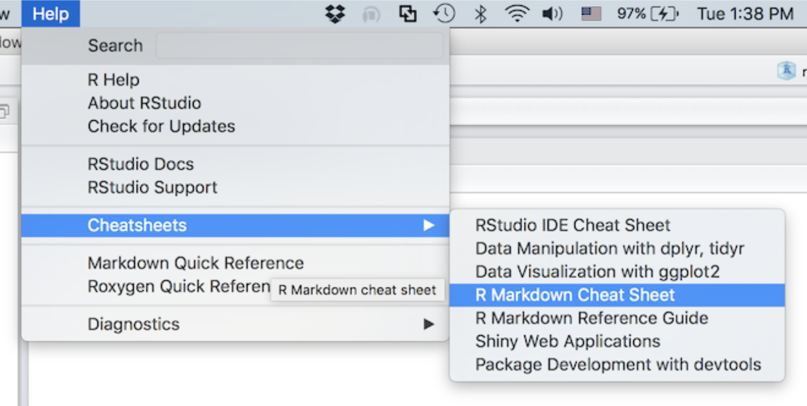
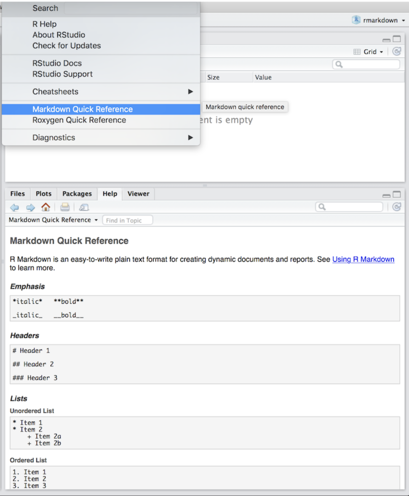

Preface
These modules are here to present a succinct guide to using R, RStudio, and R Markdown for data wrangling and visualization. This guide is meant for those who have little to no experience in programming. My purpose in designing these modules is to provide a brief yet clear guide to learning the basic theory of these tools and how to apply them in practice. Throughout this book, I will reference online resources that provide more in-depth discussion of the topics covered.
The internet is full of helpful resources concerning R and RStudio. If you run into an issue, do not be hesitant to use forums such as stack overflow. Someone has most likely run into the same problem before. A simple Google search will often do the trick.
Before starting this book, I recommend working through Professor Andy Field’s guide. I use his recommendations for reorganizing the windows in R Studio to promote better workflow. Most of the assignments you submit will be as a PDF output, making it important that you download LATEX, the software used to produce these outputs. The different versions of LATEX can be found here.
As you are working, it can be very difficult to remember the finer points of R markdown’s syntax. RStudio has made a bunch of very helpful cheat sheets that provide examples of almost anything you might want to do. Those can be accessed through the help menu as demonstrated in the screenshot below:

You are also able to pull up a list of markdown syntax within RStudio. This will appear in the help window of RStudio:

Additionally, you can always use the search bar in the top rights of the help window to search for the documentation of any function.
These are the packages needed for work in this book:
here
- great package for referencing file names and paths
leanr
- enables tutorials in RStudio
tidyverse
- collection of integrated packages for data manipulation and visualization
- packages from tidyverse used in this book
dplyr
- package for data wrangling
ggplot2
- package for data manipulation
lubridate
- package for date time objects
readr
- package for reading files
tibble
- package for creating effective data frames
forcats
- package for factor objects
knitr
- tidy table output in both html and pdf
gt
- used to easily generate professional table outputs from data frames
tidycensus
- package for accessing US census data and estimates through their API
nycflights13
- sample data set for practice using the data visualization (ggplot2) and wrangling (dplyr) packages
readxl
- allow for reading excel files directly into a data frame
ipumsr
- package for accessing IPUMS API
gtrendsR
- package for accessing the Google trends API
rvest
Uncomment and run this code in your console to install all necessary packages for work in this book:
#install.packages("tidyverse", here", "learnr", "tidyverse", "knitr", "tidycensus", "nycflights13", "readxl", "ipumsr", "gtrendsR", "rvest")
Aden-Buie, Garrick, Barret Schloerke, JJ Allaire, and Alexander Rossell Hayes.
Learnr: Interactive Tutorials for r, 2023.
https://CRAN.R-project.org/package=learnr.
Allaire, JJ, Yihui Xie, Christophe Dervieux, Jonathan McPherson, Javier Luraschi, Kevin Ushey, Aron Atkins, et al.
Rmarkdown: Dynamic Documents for r, 2023.
https://CRAN.R-project.org/package=rmarkdown.
Greg Freedman Ellis, and Derek Burk.
Ipumsr: Read IPUMS Extract Files, 2022.
https://CRAN.R-project.org/package=ipumsr.
Iannone, Richard, Joe Cheng, Barret Schloerke, Ellis Hughes, Alexandra Lauer, and JooYoung Seo.
Gt: Easily Create Presentation-Ready Display Tables, 2023.
https://CRAN.R-project.org/package=gt.
Massicotte, Philippe, and Dirk Eddelbuettel.
gtrendsR: Perform and Display Google Trends Queries, 2022.
https://github.com/PMassicotte/gtrendsR.
Müller, Kirill.
Here: A Simpler Way to Find Your Files, 2020.
https://CRAN.R-project.org/package=here.
Müller, Kirill, and Hadley Wickham.
Tibble: Simple Data Frames, 2023.
https://CRAN.R-project.org/package=tibble.
Spinu, Vitalie, Garrett Grolemund, and Hadley Wickham.
Lubridate: Make Dealing with Dates a Little Easier, 2023.
https://CRAN.R-project.org/package=lubridate.
Walker, Kyle, and Matt Herman.
Tidycensus: Load US Census Boundary and Attribute Data as Tidyverse and Sf-Ready Data Frames, 2023.
https://walker-data.com/tidycensus/.
Wickham, Hadley.
Forcats: Tools for Working with Categorical Variables (Factors), 2023.
https://CRAN.R-project.org/package=forcats.
———.
Nycflights13: Flights That Departed NYC in 2013, 2021.
https://github.com/hadley/nycflights13.
———.
Rvest: Easily Harvest (Scrape) Web Pages, 2022.
https://CRAN.R-project.org/package=rvest.
———.
Tidyverse: Easily Install and Load the Tidyverse, 2023.
https://CRAN.R-project.org/package=tidyverse.
Wickham, Hadley, and Jennifer Bryan.
Readxl: Read Excel Files, 2023.
https://CRAN.R-project.org/package=readxl.
Wickham, Hadley, Winston Chang, Lionel Henry, Thomas Lin Pedersen, Kohske Takahashi, Claus Wilke, Kara Woo, Hiroaki Yutani, and Dewey Dunnington.
Ggplot2: Create Elegant Data Visualisations Using the Grammar of Graphics, 2023.
https://CRAN.R-project.org/package=ggplot2.
Wickham, Hadley, Romain François, Lionel Henry, Kirill Müller, and Davis Vaughan.
Dplyr: A Grammar of Data Manipulation, 2023.
https://CRAN.R-project.org/package=dplyr.
Wickham, Hadley, Jim Hester, and Jennifer Bryan.
Readr: Read Rectangular Text Data, 2023.
https://CRAN.R-project.org/package=readr.
Xie, Yihui.
Knitr: A General-Purpose Package for Dynamic Report Generation in r, 2023.
https://yihui.org/knitr/.